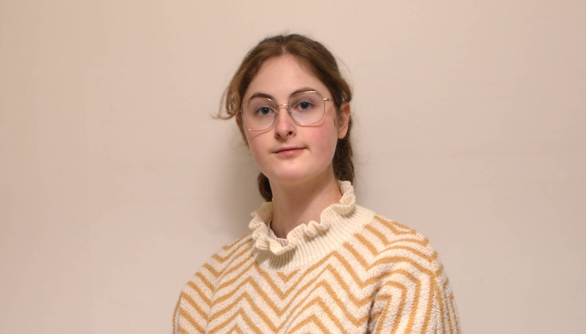

Alice MASSART
Étudiante à l'école supérieure d'art et de design d'Orléans
Design Visuel et Graphique spécialisation Art et Design Digital
alicemassart2+contact@gmail.com
Formations
2023 À AUJOURD'HUI
École Supérieure d'Art et Design d'Orléans, 45000 Orléans — Diplôme National d'Art
Actuellement en 3e année du cursus Design Visuel et Graphique en section Digital Art and Design.
2023
Lycée Guillaume le Conquérant, 14700 Falaise — Baccalauréat générale
Spécialités : Mathématiques, Physique-Chimie
Options : Mathématiques expertes, Section européenne anglais
Mention : Bien
2020
Centre d'examen du Collège Sainte-Trinité, 14700 Falaise - Brevet d'Initiation à l'Aéronautique
→ Formation au club AéroClassic à l'Aérodrome des Monts d'Eraines, 14620 Damblainville
Mention : Très bien
Expériences
JUIN 2025
Fabrique Pointcarré, 93200 Saint-Denis - Stagiaire graphiste
Graphisme pour l'organisation et la communication d'une exposition, photographie et retouches, édition et mise en page, webdesign.
AVRIL 2024 À AUJOURD'HUI
Cours particuliers de piano et solfège, Orléans — Professeure
Enseignement à domicile à des élèves de 5 à 40 ans.
Entre 5 et 8 heures de cours données par semaine.
→ conception d'exercices, identification des difficultés de l'élève et cours adaptés et personnalisés.
AVRIL 2024 À AUJOURD'HUI
Association du Bureau des Étudiants de l'ESAD Orléans, 45000 Orléans — Trésorière puis Co-dirigeante
Je me suis occupée d'une partie de l'administratif et de l'organisation.
→ mise en place d'évènements, contact avec les collectifs, mise en place de nouvelles idées au sein de l'établissement, etc.
Compétences
Langues :
Français (langue maternelle)
Anglais (B2-C1)
Webdesign et Programmation :
— HTML, CSS, JavaScript, Python.
Graphisme :
— Affiche, Édition, Illustration.
Photographie :
— Macrophotographie, Photographie de paysages.
Mes outils :
Graphisme : Scribus, Krita, Inkscape, Blender
Programmation et : Visual Studio Code, Github
Design d'interaction : Arduino, Godot, Unity (en cours d'apprentissage)
Centres d'intérêts
Musique et composition musicale :
— Piano, orchestre à cordes. Une passion d'enfance concrétisée depuis 2016.
Programmation :
— Débuts sur Scratch lorsque j'étais en CE1. Puis MIT APP Inventor, Python, HTML, CSS depuis 2018. JavaScript depuis 2024.
Photographie :
— Débuts sur appareil compact étant enfant. Aujourd'hui, utilisation d'un appareil Nikon D5100 pour la photographie de paysage et macrophotographie.